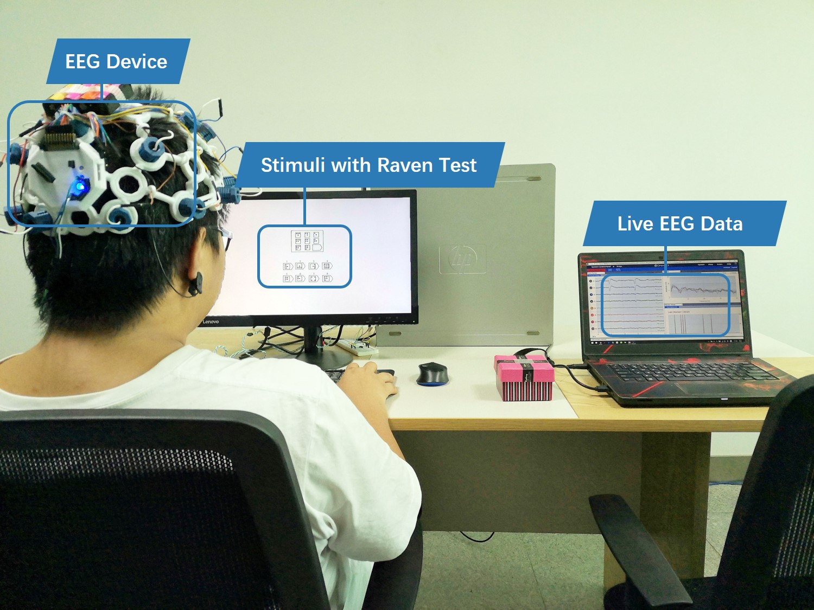

Stimuli and Experiment

The experiment system comprises three parts: EEG collector, confusion inducer, and data storage, as shown in Figure.3. We employed OpenBCI as the EEG collector in this work, due to its lowcost, high-quality bio-sensing hardware for brain-computer interfacing. It has eight channels (Fp1, Fp2, C3, C4, T5, T6, O1, O2) and a high sample rate (250Hz) at an affordable price, providing the possibility of large-scale collection of EEG signals in learning study and application. We use one desktop to induce confused states and a laptop to connect with the EEG collector and store the data.We used E-prime , a software for behavioral and psychological research, to generate the stimuli materials and interaction. It also sent trigger signals for segmenting trials. We redeveloped the firmware and software of the OpenBCI Cyton Board, making it receive the trigger signals from DB25. When storing the data, the EEG waves were real-time sync visualized. This visualization helps testers monitor the experiment.

Subjects
A total of 25 subjects participated in this experiment. We obtained 23 subjects’ data because the unexpected equipment problem made failed collecting for two persons. The ages were between 20 and 47 (Mean = 24.48, SD = 6.36); the male to female ratio is roughly half to half (12:11). The education backgrounds covered middle school, undergraduate, master, and doctoral degrees, and the major included computer science, microelectronics, bioengineering, and British and American literature. All participants were in good health and had normal vision without any history of brain injury or mental illness. Before the experiment, each subject signed an ultimate consent form. Then, the experiment testers would explain the experiment’s purpose, process, and precautions and inform subjects that it will not cause any harm. As shown in Figure, we first presented the manipulation instruction. When subjects were ready, they watched ten non-confused scene pictures, each of which lasted ten seconds. Next to this, they viewed and performed 48 tests, each of which lasted a maximum of 15 seconds. Finally, the subjects filled out the questionnaires.Dataset Summary
The Dataset consists 23 subject' data(failed subject 1 and subject 6), and each subject has 49 files. There are five labels, confused,non-confused,guess,think-right and rest. And the data labeled undefined is wasted. The data sample rate is 250Hz. The EEG cap according to the international 10 - 20 system for 8 channels is shown below: "Fp1", "Fp2", "C3", "C4", "T5", "T6", "O1", "O2"